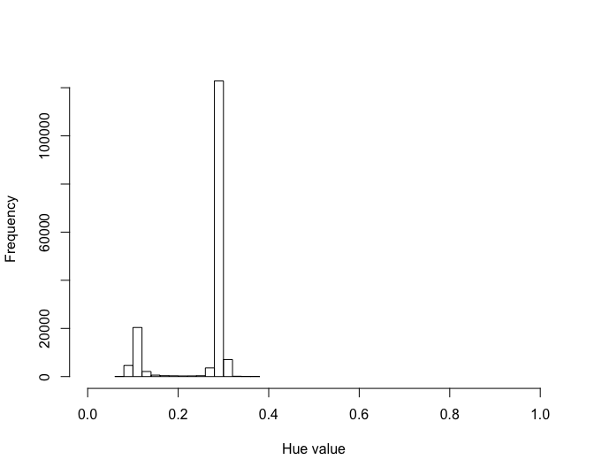
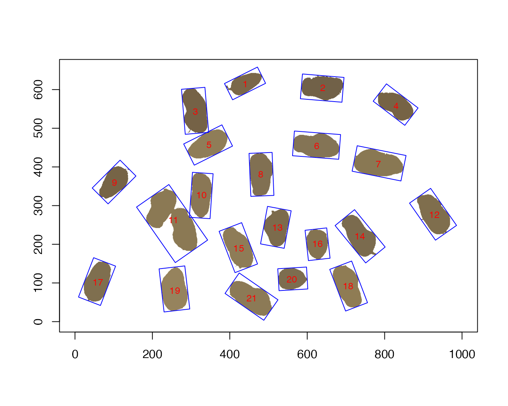
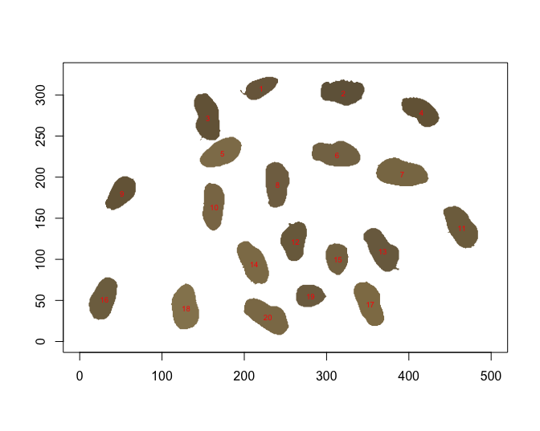
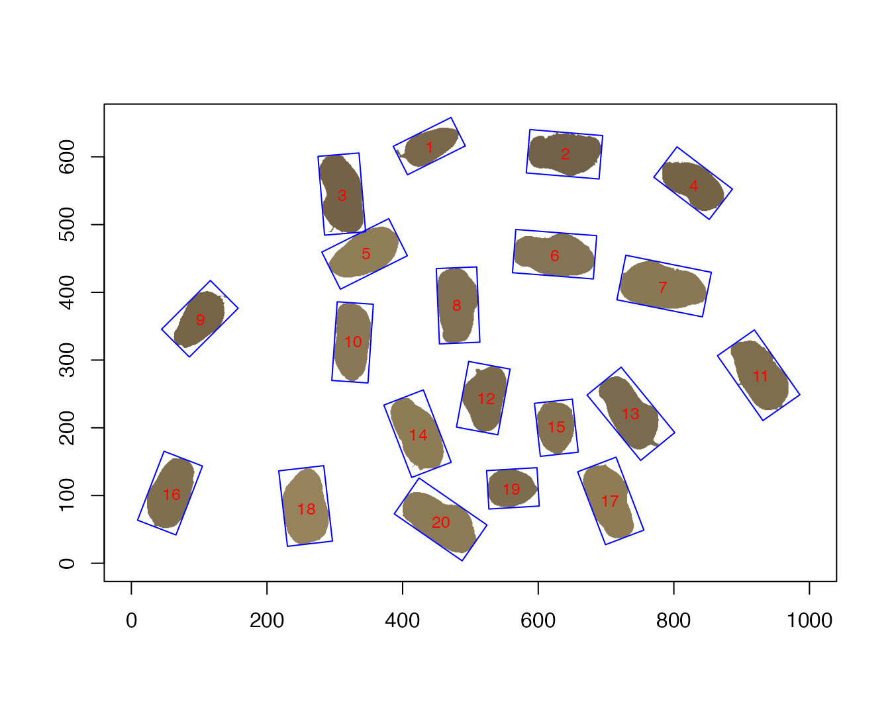
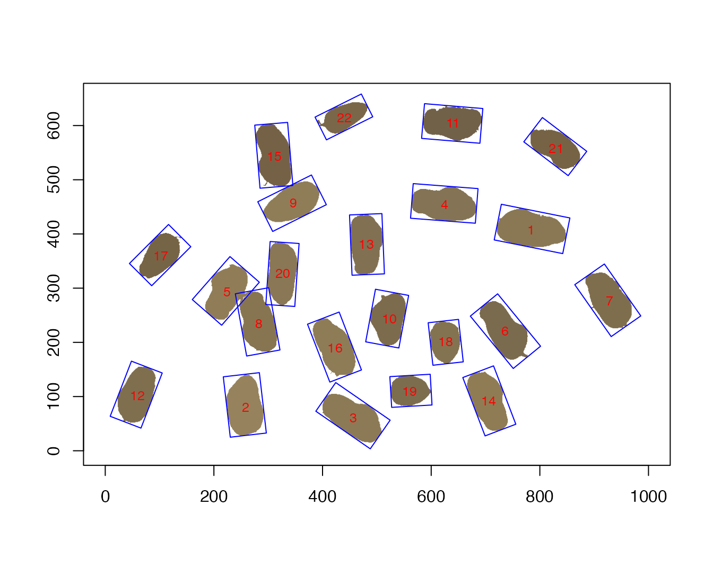

Rigatoni
Rigatoni.RmdLoad the package
library(Rigatoni)Set your working directory
setwd("/path/to/the/directory/that/contains/images/to/analyse")Working on a single image
We will use the peanut_pod.jpg example image that is provided as part of the package. This is peanut pods acquired on a flat bed scanner with a green background.
f = system.file("images", "peanut_pod.jpg", package="Rigatoni")
img = readImage(f)
display(img, method="raster")
The first thing to do is to get a range of color (hue) values for the background of the image that will be further used for applying a color threshold.
mythreshold <- get_huethr_values(img)
mythresholdThe get_huethr_values function allows to click twice on the distribution. On the example below, the second peak represents the background. Click on both sides of the peak will return a vector of 2 values. 
#> [1] 60 90Once the hue threshold values are determined it can be used to find features in the image using the krnel function
pods<-krnel(img = img,
resizw = 1000,
huethres = mythreshold,
minsize = 200,
maxsize = 20000,
save.outline = F)Note that the img parameter can either be an Image object previously obtained with EBImage::readImage or the name of an image file that is in your working directory (or it’s full patch if located elsewhere).
The resizw parameter allows to reduce image size by providing the width of the image that will be analyzed (height will be modified accordingly to respect h/w ratio). Reducing the size of the image improves the performance of features detection and is important when many images need to be analysed sequentially.
The minsize and maxsize parameters allow to fix the minimum and maximum size (area) of the objects that will be captured in the image. Note that the two parameters are expressed relatively to the resized image.
The object that is returned by the krnel function is of S3 class.. krnel
It is a list with four components:
features : a data.frame with as many rows as the number of detected features and description variables as returned by
EBImage::computeFeatures. It also includes bounding box width and height aka Feret min and max diameter.contours : a list with as many elements as the number of detected features Each element is a matrix with the coordinates of each feature.
bbox : a list with as many elements as the number of detected features. Each element is a list with 4 components:
$ptsthat contains the coordinates of each corner of the bounding box,$width,$height, and$angleparams : a list with the analysis parameters. can be used for further plotting
The features of the pods object can be plotted with the plot function:
plot(pods,
plot.bbox=T,
plot.radii = F,
plot.ellipse = F,
plot.ws.pois = F,
plot.pois = F,
label.cex = 0.8)
We can see that object #11 is the merger of two pods that were not separated on the scanner.
This artecfactual object can be excluded by decreasing maxsize.
Let’s decrease it to 10000.
We can also set save.outline to TRUE so that the analysed image will be saved in the same directory with detected objects outlines.
pods<-krnel(img = img,
resizw = 1000,
huethres = mythreshold,
minsize = 200,
maxsize = 10000,
save.outline = T,
img.name = "peanut_pod")
The resulting pods object no longer contains the 2 non separated pods.
plot(pods,
plot.bbox = T,
plot.radii = F,
plot.ellipse = F,
plot.ws.pois = F,
plot.pois = F,
label.cex = 0.8)
Another, and recommended, option is to use the watershed parameter.
pods<-krnel(img = img,
resizw = 1000,
huethres = mythreshold,
minsize = 200,
maxsize = 20000,
save.outline = F,
watershed = T)
plot(pods,
plot.bbox = T,
plot.radii = F,
plot.ellipse = F,
plot.ws.pois = F,
plot.pois = F,
label.cex = 0.8)
Working on many images
If your working directory contains many images it is possible to analyse several or all of them at a time.
files <- dir(pattern = ".*.jpg$")
#or files <- c("file1.jpg", "file2.jpg", "file3.jpg")To apply the krnel function to all the files listed in files and get the result in a list, we can use the lapply function.
img_pods <- lapply(files,
function(a) krnel(img = a,
resizw = 1000,
huethres = mythreshold,
minsize = 100,
maxsize = 10000,
save.outline = T)
)We thus get a list of krnel objects. Let’s name the components of the list with image names.
names(img_pods) <- filesTo extract all features of all images into a single data.table with an extra column containing the name of the images :